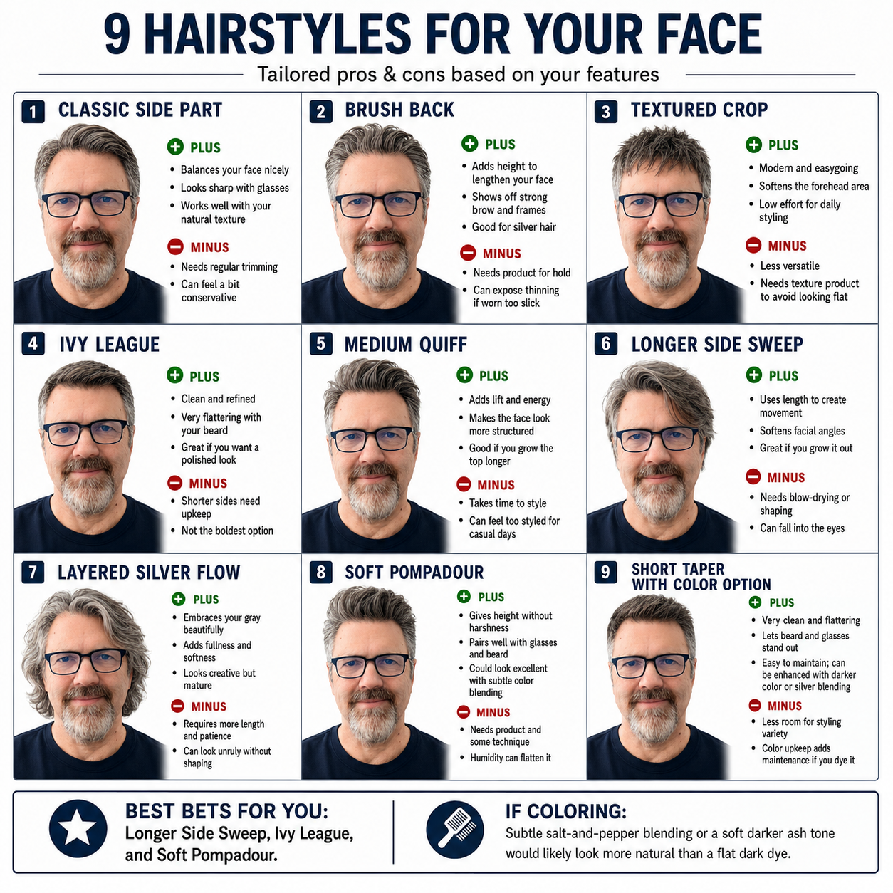
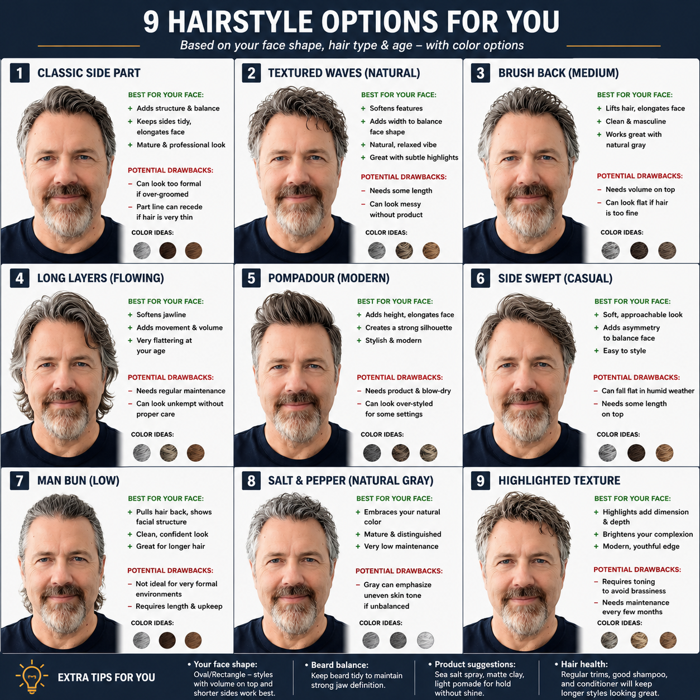

Self-Documentation Report · Spring 2026
An incomplete record of who I might become,
depending on the length of my hair.
The Subject. Pre-analysis.
In the spring of 2026, I submitted a single photograph of my face to an algorithm. The algorithm was optimistic. It returned eighteen portraits.
I had not asked for eighteen portraits. I had asked about hair.
The algorithm did not seem to understand the difference. It identified my face shape as Oval/Rectangle — which I have chosen to take as a compliment — assessed my hair type, noted my age, and proceeded to generate what it described as a "tailored" set of recommendations. Each recommendation came with a portrait. The portrait looked like me. The portrait did not look like me. The portrait was me, in another life, with different hair, making different choices, probably at a different dinner table somewhere, eating something I can't picture.
I stared at them for a while. Then I made this page.
Fig. 1 — First Contact

The algorithm's initial findings. It recommended, as best bets, the Longer Side Sweep, the Ivy League, and the Soft Pompadour. It had opinions about silver hair. The subject considered the Pompadour for longer than he would like to admit.
Fig. 2 — Second Opinion

The algorithm returned, unprompted, with nine more. This time it mentioned beard balance. It had thoughts on salt spray, matte clay, and light pomade. It said natural gray would look more distinguished than a flat dark dye. The subject put down the flat dark dye.
What follows is an incomplete taxonomy of who I might have been, given different choices at the barbershop earlier in life. All eighteen versions are real. All eighteen are living somewhere. I am, apparently, all of them.
Has opinions about infrastructure. Arrives seven minutes early to everything and does not mention it. Drives something sensible and has no strong feelings about it whatsoever. You would trust him with your finances. You would not call him at 2am. He would not expect you to.
Fun at parties. Not always invited back. Knows three facts about every topic and delivers them with full confidence. Once described himself as "a connector." The algorithm said this one pairs well with glasses. He wears the glasses like a prop.
Still going through it. But creatively. The algorithm flagged that this look requires "proper care," which he interprets as a metaphor and which it was not. Reads a lot. Finishes most of the books. Has a podcast he's been meaning to start.
Does not answer emails quickly. Has a sourdough starter he has named. Once turned down a meeting because he had "a lot on." He did not have a lot on. The algorithm noted this style requires length and upkeep. He has both. He is comfortable with both.
Requires toning every few months. Is aware of this. Has made peace with it. The algorithm said this look is "modern" and "youthful." He heard "modern" and "youthful" and immediately booked an appointment. This is the version that tries the hardest. You love him for it.
Looks like he makes furniture by hand and he does make furniture by hand. Embraces the gray, as instructed. Can look unruly without shaping, per the algorithm, which understands him better than most people. Full of softness. Requires patience. Has both.
This is the one who wins. He has made peace with the calendar. He smells like cedar. He does not need to be told he looks distinguished — he knows, and he's moved on to other things. The algorithm gave him the fewest caveats. He earned that.
The real Hamilton contains all of them.
The algorithm doesn't know that. The algorithm is still optimizing.
— Hamilton Crouse
github.com/hamiltoncrouse